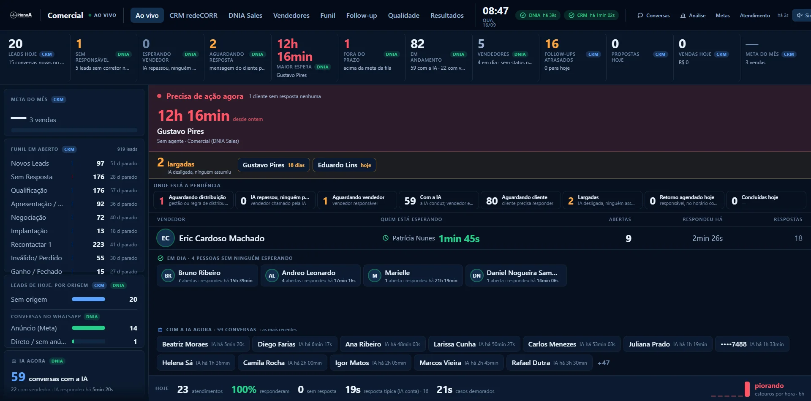
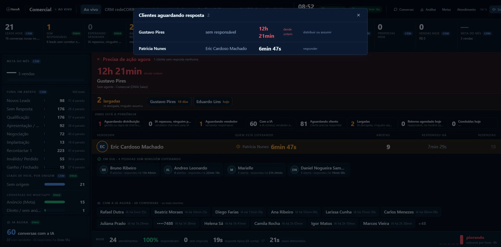
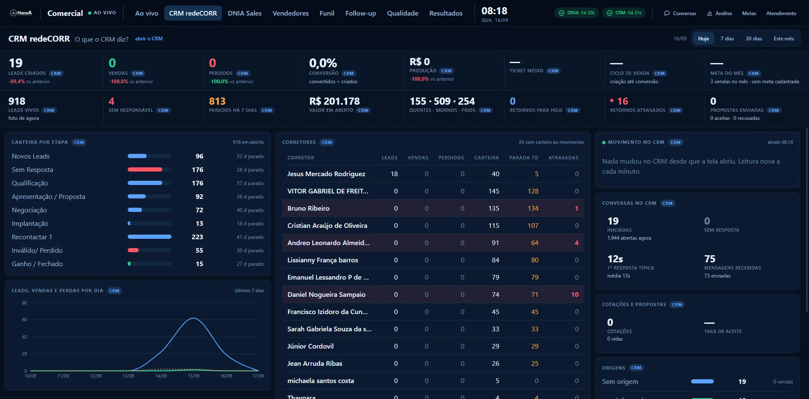
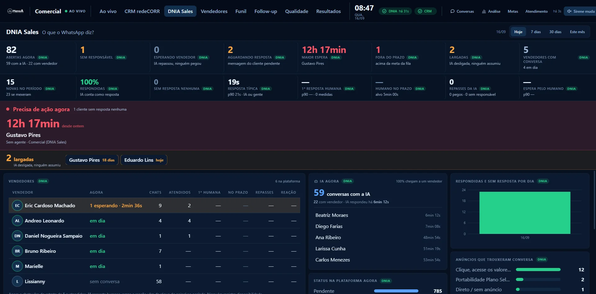
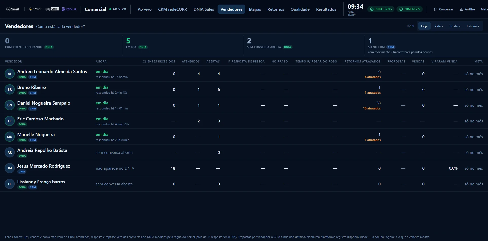
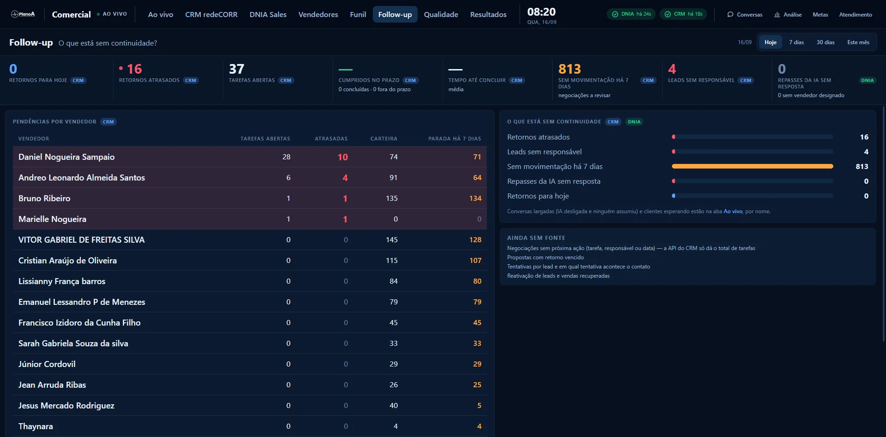
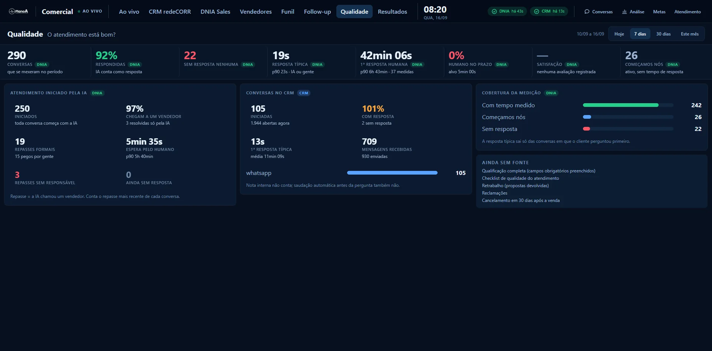
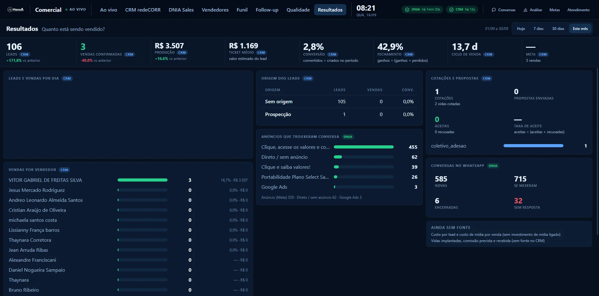

Toda conversa começa com o robô. Ela responde 92% do que chega, dia e noite.
Equipe comercial · 16 de setembro de 2026
Painel do Comercial.
Quem está esperando, agora. Quem está com quem. O que aconteceu no dia. Numa parede só, ao vivo.
0segundos · ritmo da fila
0telas
0sistemas · DNIA + CRM
0régua para todos
apresentam Cauê Lima e João
Administradora Plano A
← → navegar · Esc índice · P roteiro
Agenda
Cinco blocos. Vinte minutos.
- 01Por que existeO que acontecia sem a parede e a frase que a resume
- 02De onde vêm os númerosDuas fontes, três relógios e o selo de frescor
- 03A tela da paredeOs 12 números, as faixas de alarme e as listas
- 04As abasCRM, DNIA, Vendedores, Etapas, Retornos, Qualidade, Resultados
- 05Como vamos usarOs combinados, a conta da espera e o acesso
01
Por que existe
O que a régua mediu na primeira semana ligada — e a frase que resume o painel inteiro.
Últimos 7 dias · régua do painel · 16/09
O robô responde em segundos. A gente, em horas.
Casos demorados (os mais lentos): 6h 43min. Medido em 37 conversas em que o cliente perguntou primeiro.
Nenhuma primeira resposta de uma pessoa da semana coube nos 5 minutos combinados.
813 sem movimentação há 7 dias ou mais. 16 retornos atrasados.
Números reais lidos pelo painel na manhã de 16/09. O robô conta como resposta na taxa de respondidas; não conta como vendedor.
Uma frase
Ninguém espera sem que a parede saiba.
- Quem espera aparece em segundos. A fila do WhatsApp é lida a cada 5 s. Cliente esperando vira número vermelho, cronômetro e nome.
- Todo número diz de onde veio. Etiqueta CRM ou DNIA em cada um. Um 12 sem origem vira discussão em vez de decisão.
- Número velho nunca com cara de vivo. Se uma fonte para de responder, a tela avisa e apaga. Zero aparece só quando é zero.
02
De onde vêm os números
Duas fontes, uma régua e um selo de frescor em cada tela.
As fontes
Dois sistemas falam. Uma régua mede.
DNIA Sales DNIA
Onde o cliente fala. Conversas do WhatsApp, o robô que atende primeiro, o passagem do robô para o vendedor, o status de cada conversa na plataforma, anúncio de origem e satisfação.
CRM redeCORR CRM
Onde o cliente vira negócio. Clientes criados, etapa no etapas, tarefas de retorno, cotações e propostas, vendas confirmadas, produção e a meta do mês.
Régua do painel painel
A espera medida pela nossa regra, conversa a conversa: quanto tempo o cliente ficou sem resposta, quem respondeu, se foi gente ou IA, se coube no alvo.
O painel só lê. Ele não muda nada no DNIA nem no CRM — quem atende continua atendendo onde sempre atendeu.
A régua
Três relógios, um alvo.
Ninguém respondeu — nem o robô
Conta da última mensagem do cliente até qualquer resposta nossa, inclusive do robô. Passou do combinado da fila, vira fora do prazo na faixa vermelha.
O robô chamou, ninguém pegou
O robô passou a conversa para uma pessoa e a pessoa ainda não respondeu. É o alarme mais importante da parede: o cliente já foi prometido a alguém.
Do cliente perguntar até gente responder
É o tempo que tem alvo: 5 minutos no expediente. O robô não zera esse relógio. Aparece por vendedor, por dia e por período.
- Só gente zera o relógio humano. Resposta do robô mantém o cliente ocupado, não atendido. Mensagem apagada não conta.
- Cortesia não abre relógio. Um “ok”, “obrigado” ou joinha depois da nossa resposta fecha o assunto, não abre pergunta. Áudio e imagem contam — podem ser pergunta.
Frescor
Todo número diz há quanto tempo é verdade.
Quem está esperando, há quanto tempo, com quem. É o que faz a parede parecer viva — porque está.
Os indicadores de cada aba (CRM e DNIA) se renovam de minuto em minuto. O CRM permite uma leitura por minuto; a tela do CRM pede a cada 15 s e recebe o novo assim que ele existe.
Faixa amarela no topo, tela apagada, selo da fonte em alerta. Número congelado com cara de vivo é o defeito que a parede existe para não cometer.
No cabeçalho de toda tela: ✓ DNIA há 14s · ✓ CRM há 21s. Se aparecer amarelo, desconfie do número e avise o Cauê.
03
A tela da parede
A aba Ao vivo: 12 números no topo, as faixas de alarme e a linha de cada vendedor.
Ao vivo · /tv/comercial
Doze números. Cada um abre uma lista.
plano-a-painel.vercel.app/tv/comercialao vivo

1
2
3
4
5
6
7
8
9
10
11
12
- 1Clientes novos hoje CRM
Clientes criados hoje no CRM. Embaixo, quantas conversas novas chegaram no WhatsApp.
- 2Sem vendedor DNIA
Conversas abertas sem vendedor designado. Abre a lista para distribuir ou assumir.
- 3Esperando vendedor DNIA
O robô passou e ninguém pegou. O alarme principal: pisca e liga a sirene.
- 4Sem resposta DNIA
Clientes com mensagem pendente, sem resposta nenhuma — nem do robô.
- 5Espera mais longa
O cliente que espera há mais tempo, com nome e cronômetro. Clique abre a conversa.
- 6Fora do prazo DNIA
Esperas acima da meta da fila. Cada um vira um cartão na faixa vermelha.
- 7Conversas abertas
Conversas abertas agora: quantas com o robô, quantas com vendedor.
- 8Vendedores
Quantos têm conversa aberta e quantos estão em dia (ninguém esperando por eles).
- 9Retornos atrasados CRM
Tarefas de retorno vencidas no CRM. Embaixo, quantas estão marcadas para hoje.
- 10Propostas hoje CRM
Propostas enviadas hoje pelo CRM.
- 11Vendas hoje CRM
Vendas confirmadas hoje e o valor. Fica verde quando existe pelo menos uma.
- 12Meta do mês CRM
Atingimento da meta cadastrada no CRM, quanto falta e o ritmo por dia útil. Hoje: sem meta cadastrada.
Ao vivo · o que exige ação
Faixas de alarme, onde está a pendência e cada vendedor.
/tv/comercial · leitura de 5 sao vivo
1
2
3
4
5
6
7
8
9
- 1Coluna do CRM
Meta do mês, etapas em aberto (todos os clientes em aberto por etapa) e clientes de hoje por origem. Contexto, não alarme.
- 2Precisa de ação agora
Os três piores casos em corpo grande, com o tempo de relógio e as horas de expediente sem resposta. Os demais viram cartões vermelhos. Ação: distribuir ou assumir.
- 3Abandonadas
O robô foi desligada na conversa e ninguém assumiu. Lead frio: a janela do WhatsApp fechou — é para ligar, não esperar mensagem.
- 4Onde está a pendência
Oito estados: aguardando distribuição, robô passou e ninguém pegou, aguardando vendedor, com o robô, aguardando cliente, largadas, retorno agendado hoje, concluídas hoje. Cada um abre a lista.
- 5Linha de cada vendedor
Anel do avatar = estado (verde em dia, amarelo aviso, vermelho estouro). Quantas abertas, há quanto tempo respondeu. Quem tem cliente esperando sobe com o cronômetro do pior caso.
- 6Robô agora
Quantas conversas o robô conduz neste momento, quantas estão com vendedor e há quanto tempo o robô respondeu pela última vez.
- 7Com o robô agora
As conversas mais recentes que o robô está conduzindo, com o tempo desde a última resposta dela. Clique abre a conversa.
- 8Rodapé do dia
Atendimentos de hoje, % respondidos, sem resposta, resposta típica (robô conta) e casos demorados.
- 9Tendência
Estouros por hora nas últimas 6 horas: piorando ou melhorando.
Ao vivo · a lista
Clicou no número, abre quem, há quanto tempo e o que fazer.
/tv/comercial · lista “aguardando resposta”ao vivo

1
2
3
4
5
6
- 1Título e contagem
Qual número foi clicado e quantos clientes estão nele agora. Esc fecha.
- 2Cliente
Nome como está no WhatsApp (telefone mascarado na TV). Clique abre a conversa inteira.
- 3Responsável
Quem está com a conversa — ou “sem responsável” quando ninguém assumiu.
- 4Espera
Há quanto tempo o cliente espera, em relógio de parede. Vermelho quando passou do combinado.
- 5Desde quando
“desde ontem”, “anteontem” ou a data: para não confundir 20 horas com 20 minutos.
- 6Próxima ação
O que a lista pede: responder agora, distribuir ou assumir, ligar para o cliente ou encerrar.
Dentro da conversa: bolhas do cliente, do robô e do vendedor, e a espera medida entre cada pergunta e a resposta de uma pessoa. Sirene: o botão no canto toca enquanto houver cliente esperando vendedor ou fora do prazo.
04
As abas
CRM redeCORR · DNIA Sales · Vendedores · Etapas · Retornos · Qualidade · Resultados. Cada aba responde uma pergunta.
CRM redeCORR · /tv/comercial/redecorr · “O que o sistema de vendas diz?”
O período: o que entrou, o que fechou, o que perdeu.
/tv/comercial/redecorr · hoje1 leitura/min

1
2
3
4
5
6
7
8
- 1Clientes novos
Clientes que entraram no CRM no período, com a variação contra o período anterior.
- 2Vendas
Clientes convertidos (ganhos) no período.
- 3Perdidos
Clientes marcados como perdidos. Aqui, cair é bom.
- 4Viraram venda
Convertidos ÷ criados no período.
- 5Valor vendido
Valor das vendas confirmadas no período.
- 6Valor médio por venda
Produção ÷ vendas. Valor estimado do cliente quando ainda não fechou.
- 7Dias até fechar
Dias entre o cliente ser criado e a venda ser confirmada, em média.
- 8Meta do mês
Sempre do mês corrente, qualquer que seja o período. Hoje: 3 vendas no mês e nenhuma meta cadastrada no CRM — é o primeiro combinado.
CRM redeCORR · a foto de agora
A foto de agora e o que acabou de mudar.
/tv/comercial/redecorr · foto do presente1 leitura/min
1
2
3
4
5
6
7
8
9
10
11
12
- 1Clientes em aberto
Todos os clientes em aberto no CRM, agora. Não depende do período.
- 2Sem vendedor
Clientes vivos sem corretor. Deveria ser sempre zero.
- 3Parados há 1 semana
Clientes vivos sem nenhuma movimentação na última semana. Hoje: 813 de 918.
- 4Valor em negociação
Soma do valor estimado dos clientes em aberto.
- 5Quentes · mornos · frios
Temperatura dos clientes em aberto, como está marcada no CRM.
- 6Retornos para hoje
Tarefas de retorno com vencimento hoje.
- 7Retornos atrasados
Tarefas de retorno vencidas e não concluídas. Pisca quando existe alguma.
- 8Propostas enviadas
No período: enviadas, aceitas e recusadas.
- 9Clientes em aberto, por etapa
Todos os clientes em aberto por etapa do etapas e há quantos dias estão parados nela.
- 10Vendedores
Por pessoa: clientes, vendas, perdidos, carteira, parada há 7 dias e tarefas atrasadas (linha vermelha quando há atraso).
- 11O que mudou no CRM
O que mudou entre uma leitura e outra: “+1 venda · R$ 890 · Marielle”. O número que mexeu acende em azul.
- 12Clientes novos, vendas e perdas por dia
Sempre os últimos 7 dias, mesmo com o período em “hoje”.
DNIA Sales · /tv/comercial/dnia · “O que o WhatsApp diz?”
Agora, a cada cinco segundos.
/tv/comercial/dnia · hojeao vivo

1
2
3
4
5
6
7
8
9
- 1Conversas abertas agora
Conversas em andamento: quantas com o robô, quantas com vendedor.
- 2Sem vendedor
Abertas sem vendedor designado.
- 3Esperando vendedor
O robô passou e ninguém pegou. Pisca.
- 4Sem resposta
Mensagem do cliente pendente, sem resposta de ninguém.
- 5Espera mais longa
Quem espera há mais tempo, com cronômetro. Clique abre a conversa.
- 6Fora do prazo
Acima da meta da fila.
- 7Abandonadas
robô desligado, ninguém assumiu. Para ligar.
- 8Vendedores com conversa
Quantos têm conversa aberta agora e quantos estão em dia.
- 9Faixas de alarme
As mesmas da parede: esperando vendedor, precisa de ação agora e largadas — com sirene.
DNIA Sales · o período pela régua
O período, vendedor a vendedor.
/tv/comercial/dnia · régua do painelao vivo
1
2
3
4
5
6
7
8
9
10
11
- 1Conversas novas
Conversas que começaram no período; embaixo, quantas se mexeram.
- 2Respondidas
% das conversas com alguma resposta. O robô conta.
- 3Ninguém respondeu
Cliente escreveu e ninguém — nem o robô — respondeu.
- 4Tempo normal de resposta
Tempo normal até a primeira resposta, robô ou pessoa. os mais lentos = casos demorados.
- 51ª resposta de uma pessoa
Tempo normal até uma pessoa responder. É o número do alvo.
- 6Pessoa respondeu no prazo
% das primeiras respostas humanas dentro do alvo de 5 min.
- 7Passados pelo robô
Quantas vezes o robô chamou um vendedor; quantos pegaram; quantos ficaram sem responsável.
- 8Espera até a pessoa responder
Do passagem do robô até a resposta do vendedor: tempo normal e os mais lentos.
- 9Vendedores
Agora (de 5 em 5 s), chats, atendidos, 1ª humana, no prazo, passagens do robô pegos e reação ao passagem do robô. Quem tem cliente esperando sobe.
- 10Robô agora · situação · como termina
O que o robô conduz, quantas conversas em cada status da plataforma e como as conversas terminam.
- 11Por dia · anúncios
Respondidas e sem resposta por dia; quais anúncios trouxeram conversa.
Vendedores · /tv/comercial/vendedores · “Como está cada vendedor?”
Uma linha por pessoa, WhatsApp e CRM lado a lado.
/tv/comercial/vendedores · hojeao vivo

1
2
3
4
5
6
7
8
9
- 1Com cliente esperando
Vendedores que têm pelo menos um cliente aguardando resposta agora.
- 2Em dia
Com conversa aberta e ninguém esperando.
- 3Sem conversa aberta · só no CRM
Quem não tem conversa no WhatsApp agora; e quem existe só no CRM com movimento no período.
- 4Só no CRM
Corretores que aparecem apenas no CRM (com carteira ou movimento).
- 5Agora
“N esperando · cronômetro” ou “em dia”. Lido a cada 5 s.
- 6Clientes recebidos · atendidos · abertas
Clientes do CRM no período, conversas atendidas pela régua e conversas abertas agora.
- 71ª resposta de pessoa · no prazo · tempo para pegar do robô
Tempo normal da primeira resposta, % no alvo de 5 min e tempo de reação quando o robô repassa.
- 8Retornos · propostas
Tarefas de retorno atrasadas e propostas enviadas no CRM.
- 9Vendas · conversão · meta
Vendas confirmadas, conversão e a meta individual cadastrada no CRM.
Etapas · /tv/comercial/etapas · “Em que etapa os clientes param?”
Onde o cliente para de andar.
/tv/comercial/etapas · este mês1 leitura/min

1
2
3
4
5
6
7
8
9
10
- 1Clientes novos
Entradas no CRM no período.
- 2Viraram venda
Viraram venda no período.
- 3Perdidos
Marcados como perdidos no período.
- 4Viraram venda · perdidos (%)
Convertidos ÷ criados e perdidos ÷ criados.
- 5Dias até fechar
Média de dias da criação até a conversão.
- 6Valor em negociação · parados há 1 semana
Foto de agora: quanto está em jogo e quantos clientes não se mexem há uma semana.
- 7Clientes em aberto, por etapa
A carteira inteira, com os dias médios parados em cada etapa. Vermelho = sem resposta / perdido, verde = ganho.
- 8Por tipo de plano
Clientes e vendas por modalidade de plano.
- 9Como a conversa termina no WhatsApp
Resolvido, cliente sumiu, sem resposta, outro motivo — pela régua.
- 10Do robô para o vendedor
Conversas, % que chegam a uma pessoa, passagens do robô formais, espera pelo humano, passagens do robô sem responsável e ainda sem resposta.
Retornos · /tv/comercial/follow-up · “O que ficou parado?”
O que ficou sem próximo passo.
/tv/comercial/follow-up · hoje1 leitura/min

1
2
3
4
5
6
7
8
9
- 1Retornos para hoje
Tarefas de retorno do CRM com vencimento hoje.
- 2Retornos atrasados
Vencidas e não concluídas. É a primeira coisa a zerar de manhã.
- 3Retornos a fazer
Todas as tarefas em aberto no CRM.
- 4Feitos no prazo · tempo para fazer
% das tarefas concluídas dentro do prazo e o tempo médio para concluir.
- 5Parados há 1 semana
Negociações vivas paradas há uma semana: a revisar.
- 6Clientes sem vendedor
No CRM, agora.
- 7Passados pelo robô, sem resposta
No WhatsApp: o robô chamou e ninguém respondeu ainda.
- 8Pendências por vendedor
Tarefas abertas, atrasadas, carteira e parada há 7 dias, pessoa a pessoa.
- 9O que ficou parado
O resumo cruzando CRM e DNIA: atrasados, sem responsável, parados, passagens do robô sem resposta, retornos de hoje.
Qualidade · /tv/comercial/qualidade · “O atendimento está bom?”
A régua da semana, com a base de cada número.
/tv/comercial/qualidade · 7 dias1 leitura/min

1
2
3
4
5
6
7
8
9
10
11
- 1Conversas
Quantas se mexeram no período (o dia de uma conversa é o dia em que ela se mexeu).
- 2Respondidas
% com alguma resposta. O robô conta como resposta.
- 3Ninguém respondeu
Ninguém respondeu, nem o robô.
- 4Tempo normal de resposta
Tempo normal até a primeira resposta (robô ou pessoa); os mais lentos = casos demorados.
- 51ª resposta de uma pessoa
Tempo normal e os mais lentos até uma pessoa responder, e de quantas conversas o número saiu.
- 6Pessoa respondeu no prazo
% das primeiras respostas humanas dentro do alvo (5 min).
- 7Nota dos clientes
Nota da pesquisa do DNIA, quando existe avaliação.
- 8Nós chamamos primeiro
Conversas iniciadas pela empresa: ativo, sem tempo de resposta a medir.
- 9Atendimento começado pelo robô
Iniciados, % que chegam a um vendedor, passagens do robô formais, espera pelo humano, sem responsável e ainda sem resposta.
- 10Conversas no CRM
O que o CRM registra de conversa: iniciadas, com resposta, 1ª resposta típica, mensagens.
- 11De onde saiu a conta
Com tempo medido, começamos nós, sem resposta: a partição exata das conversas. Nenhuma tempo normal sem base.
Resultados · /tv/comercial/resultados · “Quanto está sendo vendido?”
O mês em vendas, origem e ritmo.
/tv/comercial/resultados · este mês1 leitura/min

1
2
3
4
5
6
7
8
9
10
11
12
- 1Clientes novos
Criados no período, com variação contra o anterior.
- 2Vendas confirmadas
Ganhos no período.
- 3Valor vendido
Valor das vendas confirmadas.
- 4Valor médio por venda
Valor estimado por cliente.
- 5Viraram venda · ganhos entre decididos
Convertidos ÷ criados; ganhos ÷ (ganhos + perdidos).
- 6Dias até fechar
Dias da criação até a venda.
- 7Meta
Atingimento da meta do mês cadastrada no CRM. Hoje sem meta.
- 8Clientes novos e vendas por dia
Linha do período.
- 9Vendas por vendedor
Quem vendeu, quanto e a conversão de cada um.
- 10De onde vêm os clientes
Por origem do CRM: clientes, vendas e conversão.
- 11Anúncios que trouxeram conversa
Do DNIA: qual anúncio gerou cada conversa.
- 12Orçamentos e propostas · WhatsApp
Cotações, propostas, aceitas e taxa de aceite; novas, se mexeram, encerradas e sem resposta.
05
Como vamos usar
Os combinados, a conta da espera e o acesso. O painel mede; quem muda o número é a gente.
Proposta · fechamos hoje
Oito combinados para a parede valer.
- Primeira resposta de uma pessoa em até 5 minutos no expediente.É o alvo da fila. O robô responde antes, mas o cliente foi prometido a uma pessoa.
- Repasse do robô é bastão: quem foi chamado assume na hora.“Esperando vendedor” é o número que tem que ficar em zero.
- Largada é para ligar, não para esperar mensagem.A janela do WhatsApp fechou. Distribuir ou assumir, e ligar.
- Fora do prazo: a gestão redistribui na hora.A lista já diz “distribuir ou assumir”. Ninguém fica vermelho por mais de uma rodada.
- Retorno agendado no CRM é compromisso do dia.Zerar “retornos atrasados” antes do almoço.
- Todo cliente com responsável no CRM.“Sem responsável” é zero, sempre.
- Meta cadastrada no CRM e TV ligada com sirene no pico.Hoje a meta está vazia — o painel não inventa número.
- Revisão semanal das abas Qualidade e Resultados.Segunda-feira, 15 minutos, com a régua na tela.
Momento da conta
Quantas horas de cliente esperando cabem num dia?
conversas × parte = chegam a um vendedor · chegam × espera = horas de espera por dia · × 22 dias úteis = por mês
Chegam a um vendedor por dia
31,0
Hoje · horas de cliente esperando por dia
0 h
No alvo de 5 min · por dia
0 h
Por mês · hoje × alvo
0 h → 0 h
Horas de espera a menos por mês
0 h
Valores iniciais são os da régua nos últimos 7 dias (≈32 conversas/dia, 97% chegam a um vendedor, 42 min de tempo normal). Nenhuma conversão embutida: é o tamanho do intervalo, só isso.
Acesso
Um endereço, uma senha da equipe.
plano-a-painel.vercel.app
- /tv/comercial Ao vivo — a tela da TV, sirene no canto
- /tv/comercial/redecorr Só o CRM redeCORR
- /tv/comercial/dnia Só o DNIA Sales
- /tv/comercial/vendedores Como está cada pessoa
- /tv/comercial/etapas · /follow-up Etapas · retornos: o que ficou parado
- /tv/comercial/qualidade · /resultados A régua da semana · o mês em vendas
- /conversas · /analise · /config Auditoria conversa a conversa · histórico · metas da fila
- Hoje · 7 dias · 30 dias · Este mês período em toda aba
- clique no número abre a lista; na linha, abre a conversa
- Sirene ligar na TV: toca enquanto houver alarme
- selo DNIA · CRM há quanto tempo cada fonte confirmou
- faixa amarela fonte parada — desconfie do número
A senha não vai no slide nem no grupo. Quem precisar, pede ao Cauê ou ao João. O painel só lê o DNIA e o CRM — ninguém atende por ele.
Saindo daqui
Ninguém espera sem que a parede saiba.
Meta cadastrada no CRM
Sem ela o painel mostra “—”. Com ela, mostra quanto falta e o ritmo por dia útil.
Combinados fechados
Os oito da lista, ajustados pelo time. O que ficar combinado vira a régua.
TV ligada, sirene no pico
A parede na sala do comercial, aba Ao vivo, o dia inteiro.
×
×
Painel do Comercial · Plano A · setembro de 2026